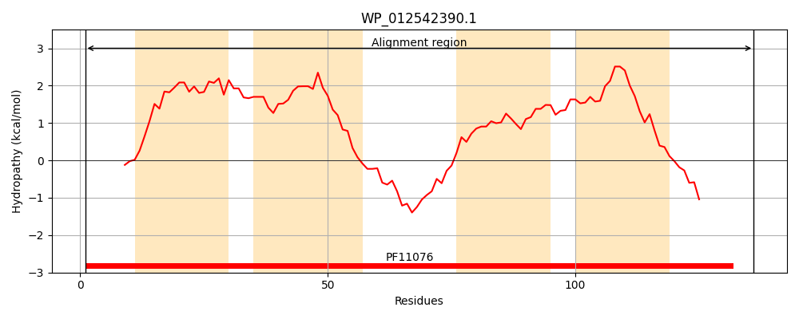
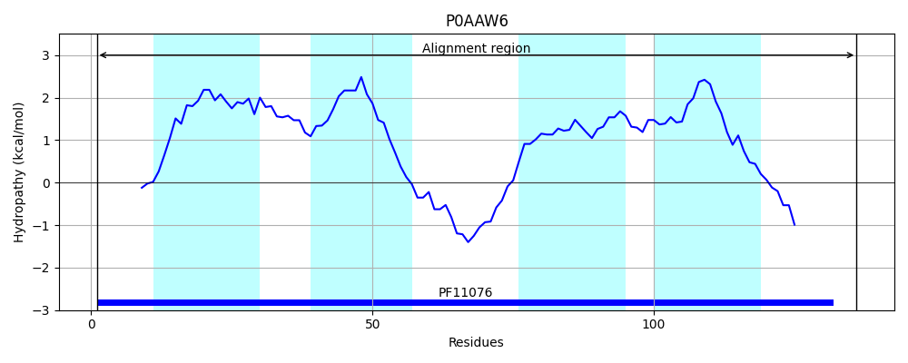
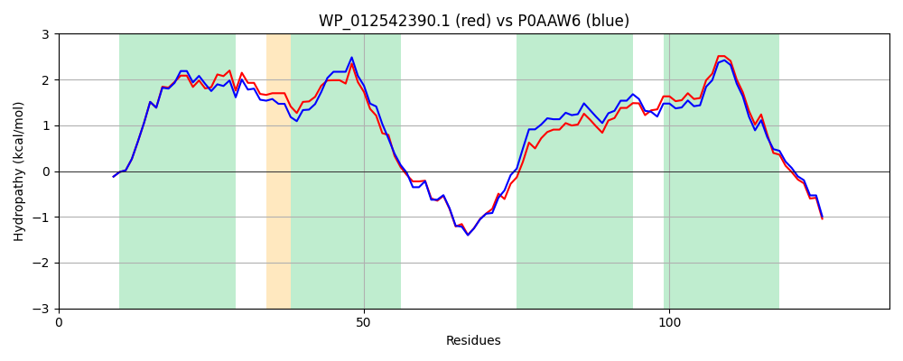

Hit Accession: P0AAW6
Hit TCID: 9.B.15.1.1
Hit Description: gnl|BL_ORD_ID|8687 gnl|TC-DB|P0AAW6|9.B.15.1.1 Inner membrane protein ybhQ - Escherichia coli O6.
Mach Len: 136
e:0.000000
Query TMS Count : 4
Hit TMS Count: 4
TMS-Overlap Score: 3.950000
Predicted Substrates:None
BLAST Alignment:
Score: 562 , Bit scores: 221 bits, E-value: 7.6e-76, Alignment length: 136, Percentage identity: 79
Query: 1 MKWQQRVRVATGLSCWQIMLHLLVVAVLVMGWMSGALVRVGLGLCVLYSVTLLAMLFLQRHHEARWRDVGDFLEELTTTWYFGAAMIALWLLSRVLHNNLLLALAGLVILAGPAVVSLLAKDKKLRNLSSEHRIRR 136
MKWQQRVRVATGLSCWQIMLHLLVVA+LV+GWMS LV VG+GLC LY VT++ ML QRH E RWR+V D LEELTTTWYFGAA+I LWLLSRVL NN LLA+AGL ILAGPAVVSLLAKDKKL +L+S+HR+RR
Sbjct: 1 MKWQQRVRVATGLSCWQIMLHLLVVALLVVGWMSKTLVHVGVGLCALYCVTVVMMLVFQRHPEQRWREVADVLEELTTTWYFGAALIVLWLLSRVLENNFLLAIAGLAILAGPAVVSLLAKDKKLHHLTSKHRVRR 136 | Protein Hydropathy Plots: |
|---|
|  |  |
Pairwise Alignment-Hydropathy Plot:
|
|---|
|  |